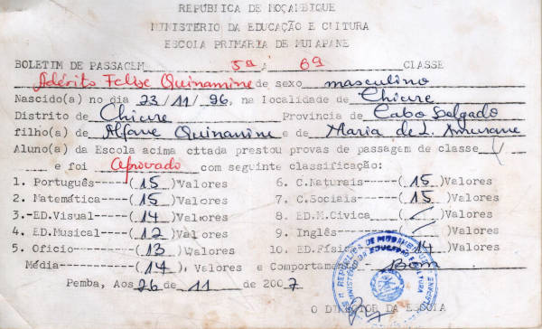
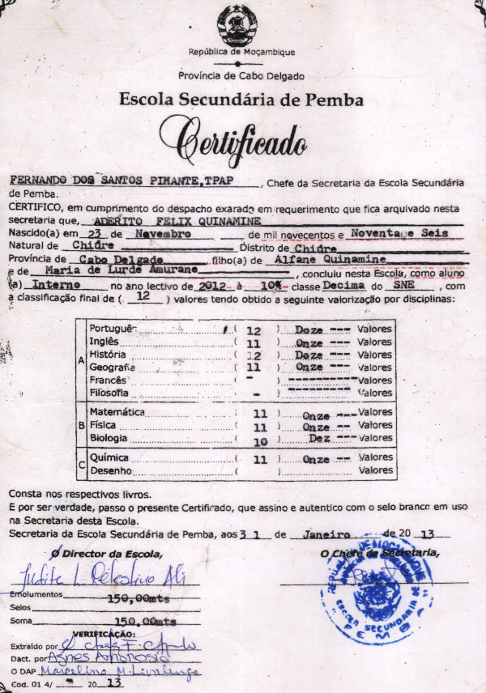
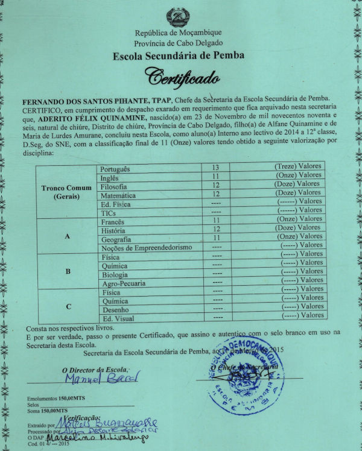
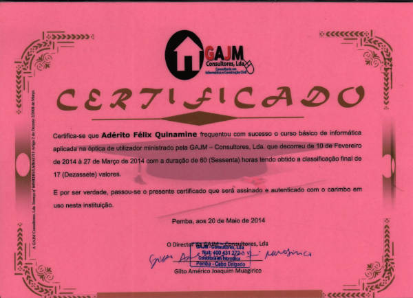
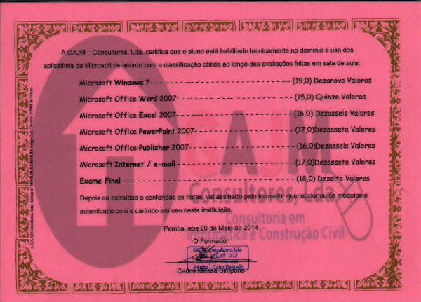
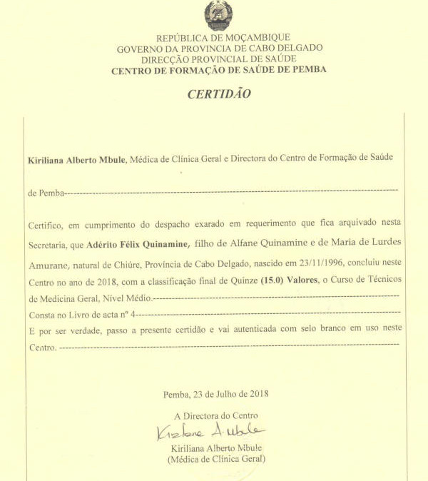
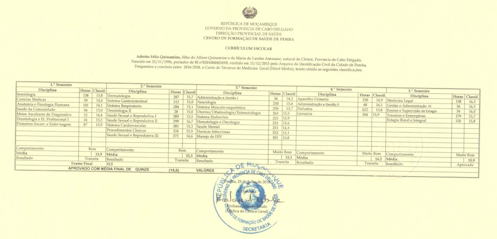
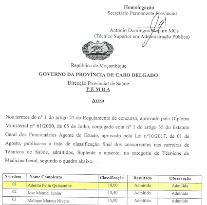

Adérito Félix Quinamine
Biografia
Curriculum
Vitae
Portfólio
Curriculum Vitae
Boletins de Passagem

Certificados do Ensino Geral


Certificado de Informática Básica


Diploma e Certificado de TMG


Classificação do concurso da DPS

Quinamine Picture Viewer
−
+
×
<
>
Habilidades
Linguagens
HTML
CSS
JavaScript
SQL
LIBs & Frameworks
React
React Native
Bootstrap
WordPress
Gerenciadores de pacotes
NPM
Yarn
Pré-processador(es)
Sass
SCV
Git
Projectos
Totalizador de Resumo Mensal de Consultas
Totalizador de Resumo Mensal de HIV/SIDA
Totalizador de Resumo Mensal de SAAJ
Doseador de Antirretrovirais
Calculadora de Doses Pediátricas